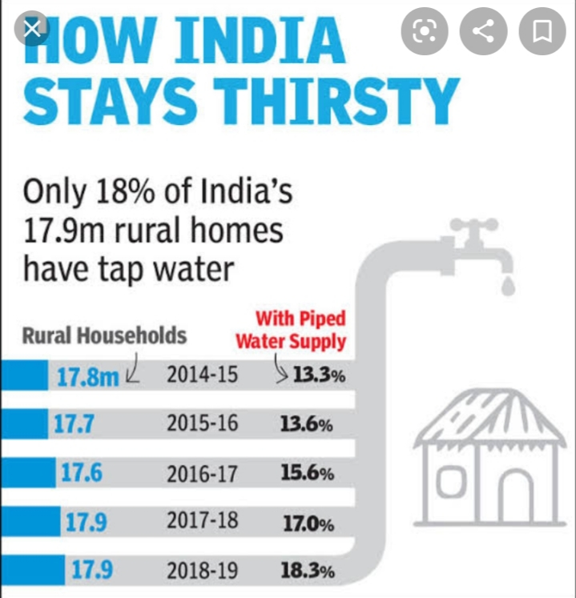
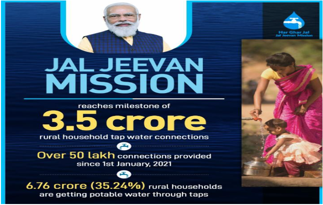

A safe water supply is the backbone
of a healthy economy, it is estimated
that waterborne diseases have an
economic burden of approximately
600 million a year in India . This is
especially true fir drought – and flood
prone areas , which affected a third
of the nation in the past couple of a
years.
Excess fluoride in India may be
affecting tens of millions of people
across 19 states , while equally
worryingly, excess arsenic may affect up to Bengal according to WHO

Campaigns launched by the government
Our prime minister Narendra Modi
launched a logo of “JAL JEEVAN
MISSION “ on September 29, called
for ensuring drinking water in all
school and anganwadi centre on the
country . On the other hand he also
launched a 100 days Campaign to
ensure the same .
The “JAL JEEVAN “ mission “Har
Ghar Jal “ aim to provide tap water
supply to households with special
focus on women and children.
